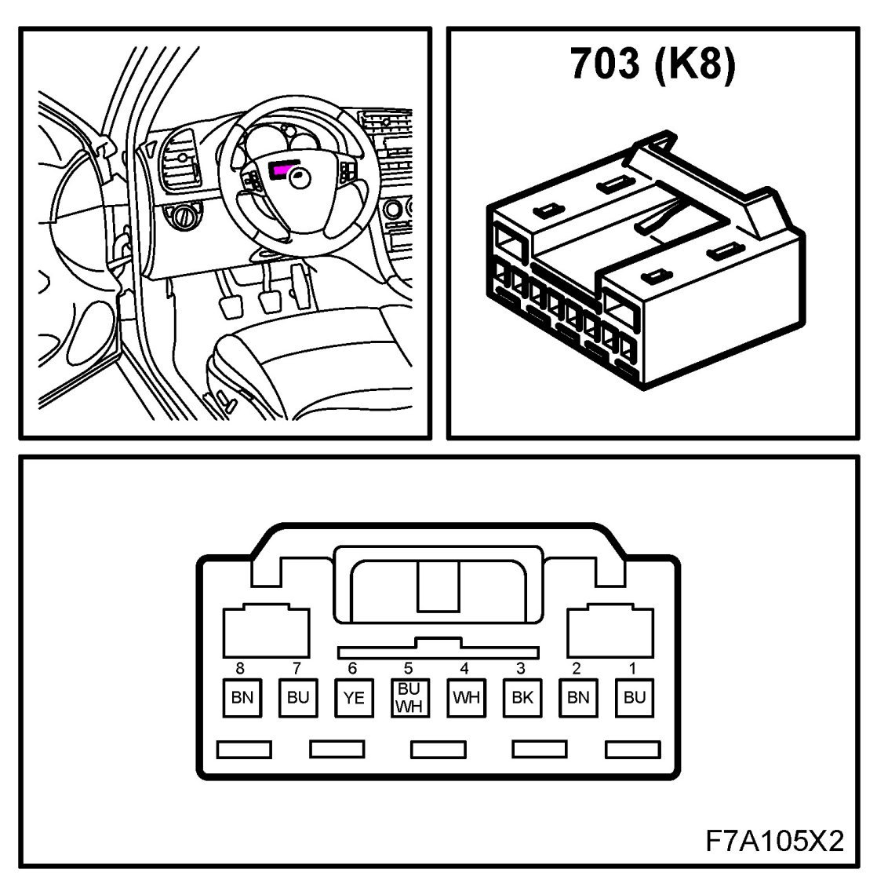
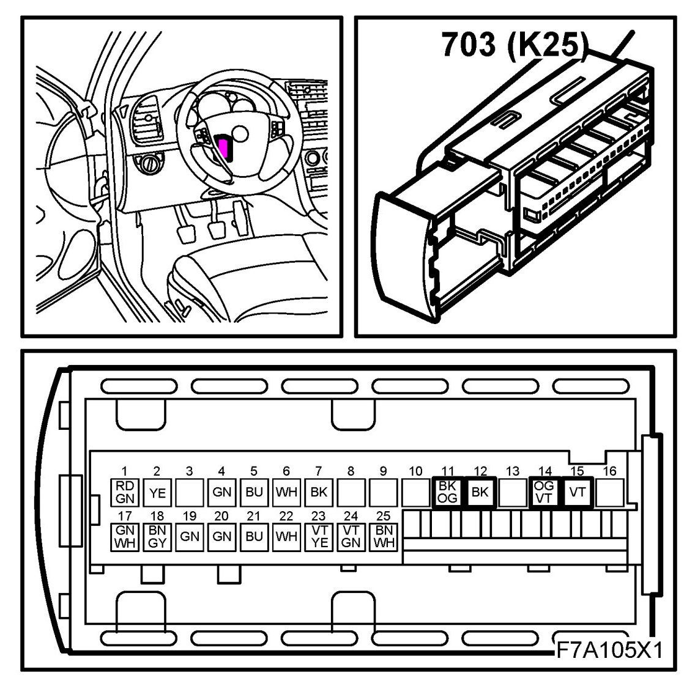

Operation CHARM
: Car repair manuals for everyone.
Home
>>
Saab
>>
2011
>>
9-3 FWD (9440) L4-2.0L Turbo
>>
Repair and Diagnosis
>>
Steering and Suspension
>>
Steering
>>
Steering Column
>>
Diagrams
Steering Column: Diagrams
Unit, Steering Column Assembly, (CIM) (703)
Location: on the steering column below the steering wheel
K8

K25
